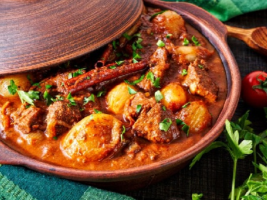

Телешки гювеч с гъби печурки, чушки и бял ориз на фурна

За 6 порции:
- 1 кг телешко месо
- 1/2 кг гъби
- 1/2 кг домати
- 3 глави лук
- 4 зелени чушки
- 1/2 ч.ч. бяло вино
- 6 с.л. олио
- 1/2 връзка магданоз
- 1 ч.л. червен пипер
- сол
Начин на приготвяне:
Телешкото месо (1 кг) се нарязва на едри парчета и се задушава в олиото (6 с.л.) и малко вода, след което се изважда. В същата мазнина
се задушават ситно нарязаният лук (3 глави), нарязаните на едро гъби (1/2 кг) и половината от настърганите домати. Добавя се червеният
пипер (1 ч.л.). Месото се поставя обратно, прибавят се нарязаните зелени чушки (4 бр) и виното (1/2 ч.ч.), залива се с гореща вода и
след като заври се посолява. След 15 минути ястието се прехвърля в тава, прибавят се останалите домати и ориза (1/2 ч.ч.) и се пече в
умерена фурна. Готовият гювеч се поръсва със ситно нарязан магданоз (1/2 връзка).
Време за приготвяне: 80 минути

Калории и хранителна стойност
Порция 515 г
Калории 407 калории
Въглехидрати 30 г 30%
Мазнини 13 г 30%
Белтъчини 41 г 41%
Холестерол 130 мг